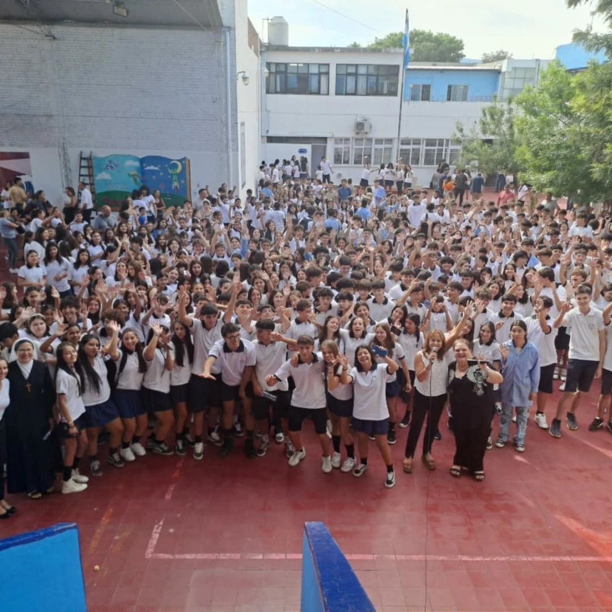
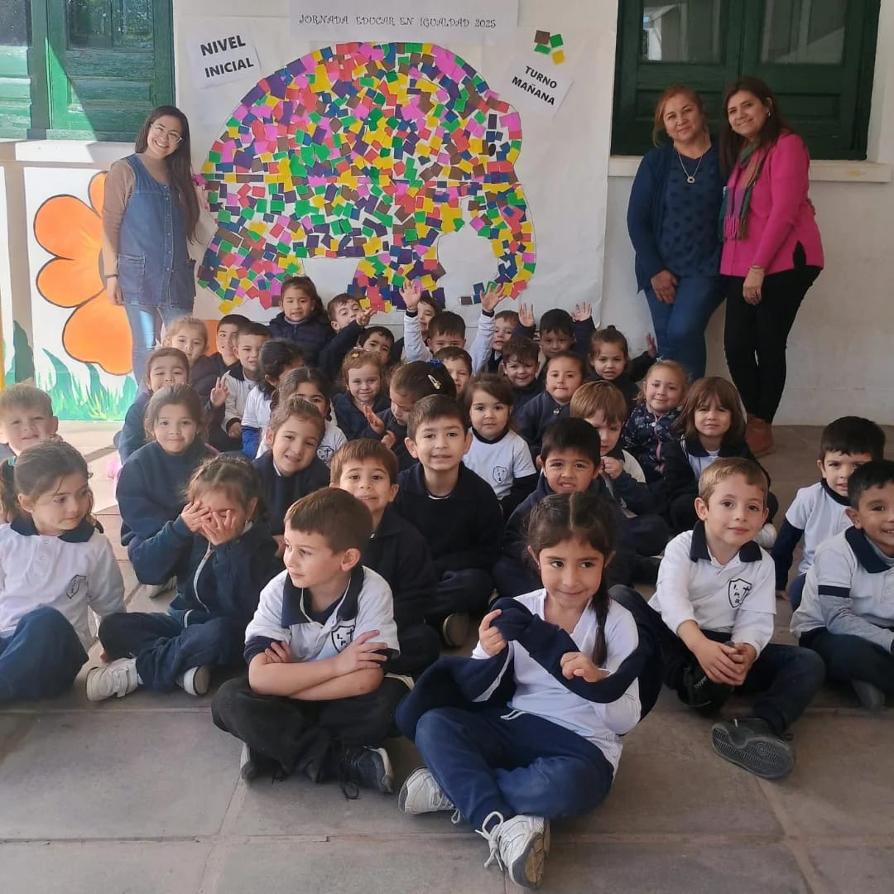
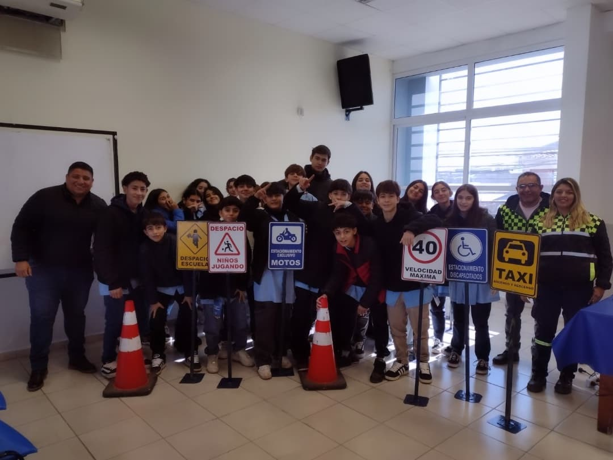

Actividad Pastoral del Instituto Brizuela
Formación en valores cristianos
Quiénes somos
Somos una institución educativa católica, comprometida con la formación integral de nuestros estudiantes, desde el Nivel Inicial hasta el Nivel Superior. Inspirados en el Evangelio y la Doctrina Social de la Iglesia, promovemos el desarrollo académico, humano y espiritual de cada persona, formando ciudadanos responsables, solidarios y comprometidos con el bien común.

Nuestra misión
Educar con excelencia académica y profunda formación en valores cristianos, para que nuestros alumnos puedan descubrir y desarrollar sus talentos, vivir su fe y servir a la sociedad con compromiso y amor.

Nuestra visión
Ser una comunidad educativa referente en la ciudad de Villa Dolores por su calidad académica, su formación integral y su compromiso con la verdad, la justicia y la paz, formando líderes capaces de transformar la sociedad desde los valores del Evangelio.

Nuestros valores
Fe viva
Cultivamos una relación personal con Dios a través de la oración y la vida sacramental.
Respeto
Tratamos a cada persona con dignidad y empatía.
Solidaridad
Promovemos el servicio a los demás, en especial a los más necesitados.
Compromiso de la comunidad
Nuestro ideario compromete a directivos, docentes, familias y estudiantes a vivir de acuerdo con estos principios, trabajando juntos para construir una comunidad educativa donde la fe, la esperanza y el amor sean el centro de todas nuestras acciones.